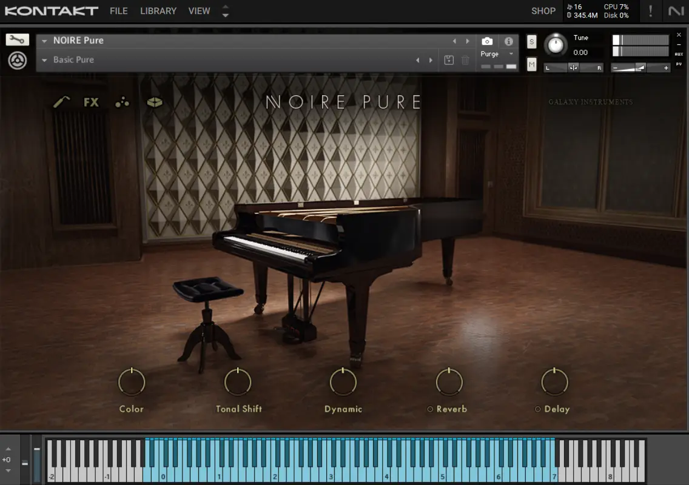
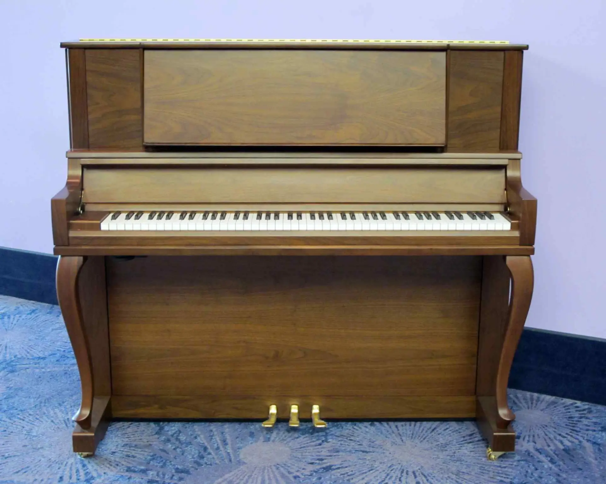

Enhance Your Music with Powerful, Stunning Software Instruments!
So you play an acoustic instrument; are there musical software instrument equivalents?

The Native Instruments Komplete suite of virtual instruments contains many virtual instruments. In particular, I love using the Kontakt sampler and loading it with sampled instruments such as the Noire Grand piano and the Maverick Upright piano. An example of the Noire Grand Piano loaded into Kontakt can be seen in the image above. I have found the Noire to be a very versatile/clear-sounding instrument to work with. Below are some available virtual instruments ->
- Native Instruments Komplete 13
- IK Multimedia SampleTank 3 Crossgrade Edition – Sound & Groove Workstation
- Total Workstation XL Instruments Bundle Software
After speaking with some friends who play acoustic instruments such as piano and guitar, a regular comment is that a computer could never sound the same as my real instrument.
Years ago that statement was probably true but as software/technology improves the gap between the two is becoming much less.

A Journey from then to now
I personally began my journey in music by playing an upright Thürmer piano. I also enjoyed learning the acoustic guitar and loved experimenting with effects pedals. With respect to learning the piano, hours were spent learning scales, arpeggios etc…Playing a real acoustic piano is just great. However, when you consider the weight and size of a real piano, the need for regular tuning and that you are locked into one particular piano timbre, there is some merit for alternative approaches. Since those days of learning on a ‘real acoustic piano’, I have enjoyed playing many types of keyboards. Recently, I have used a digital piano connected to a computer to enjoy a never-ending collection of software instruments. I believe the key is to find a digital/electric instrument where you are happy with the feel and response of the keybed action.
You can find instruments such as digital pianos at the following site at Mustar . Other instruments and accessories are available also.
Anyone for Software instruments?
One of the music software packages that I use is Sampletank. It is a sample-based platform where several types of instruments can be loaded alongside one another or individually. The image is an example of
one of the pianos offered in Sampletank. There are many software instruments available and if you are into guitars or other string-based instruments, then there are lots of options also.
The final image shows some big-sounding string instruments depicting the London Symphonic strings by Aria sounds run in the Kontakt sample platform (Native Instruments).
You can explore some software based on guitars using this link.
This page contains affiliate links.
I plan to talk more about the options available and would love for you to experience more about what is possible using technology with music.
I would love to hear from you and know where you are on your musical journey. I am keen to provide more information about the various options available and the fun experiences you can have when connecting music with computers and using technology in general.
Please send a message or leave a comment below so I can provide some more input into your journey.
Return to my Home page.
Disclaimer: I am an affiliate marketer and I earn from qualifying purchases that you make